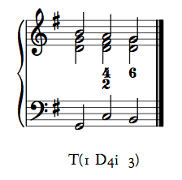
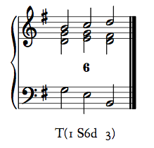
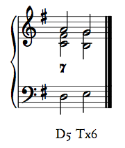
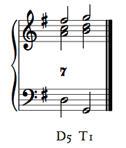
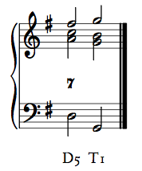
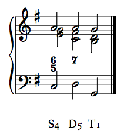

Musicianship Resources
Keyboard-style voice-leading schemata
Following are a number of schemata for keyboard-style voice-leading. Some of these are patterns that are common enough to warrant special attention (and memorization). Others require non-default voice-leading or doublings. In any case, these are worth memorizing to assist both in composition/arranging and in recognition of standard patterns.
Voice exchange
A voice exchange occurs when the melody and bass lines exchange pitches over the course of a simple contrapuntal prolongation. For example, in the progression T(1 D2p 3), the bass begins on do and ends on mi. In a voice exchange, the melody would reverse this, starting on mi and ending on do. This common pattern can use either a 6/4 or a 6/3 chord for D2p:


Using this voice exchange pattern will ensure smooth voice-leading throughout the prolongation.
Note that the fa in the D2p chord of the second example does not resolve down to mi. This is permissible because mi is required of the bass line, and because the smooth outer-voice counterpoint and stepwise inner-voice motion counteract any harshness perceived by the unresolved dissonance.
The voice exchange can also be used with a D4i chord. Note that the upper voices will be exactly the same as with a 6/4 D2p.

These patterns can be used in major or minor, transposed to any key, and the D2p voice exchanges can be used in reverse, as well—T(3 D2p 1). They can also be used to prolong S and D: S(4 T5p 6) or D(5 S6p 7), for example.
Parallel tenths
Do–re–mi in the bass can also be accompanied by mi–fa–sol in the melody, making parallel tenths.

Note here that, like the fa in the D2p voice exchange, the fa in the melody is an unresolved functional dissonance. In this case, the voice leading once again is so smooth that it overrides the need for the functional dissonance to resolve.
This pattern can also be used in major or minor, transposed to any key, and in reverse.
Champagne progression
While T(1 D2p 3) is a perfectly acceptable way to accompany mi–fa–sol in the melody, a more interesting (and also more involved) way to harmonize that melody is what my undergraduate theory professor, Gene Biringer, called the champagne progression: T(1 S6d 3). (It's the progression you use when you want to impress a date.)
The champagne progression is very nice, but must be treated carefully. Only use it with mi–fa–sol (or me–fa–sol) in the melody, and always use the following voice-leading (note the non-standard doubling of the bass—la/le—in the S6d chord).

The standard champagne progression (above) uses a 6/3 chord for T3. Following is a variant using 5/3 for T3, which Biringer dubbed "pink champagne," because it is especially nice. It should also be especially rare, or it loses its punch.

The champagne progression should only be used to prolong tonic function.
Deceptive resolution
A deceptive resolution occurs When a D5 chord does not progress, as expected, to a T1 to form an authentic cadence, but instead progresses to Tx6. In the deceptive resolution, it is important for ti to resolve to do—as it would in an authentic cadence—not la/le. This fulfills its role as a tendency tone, helps the "deception" to work, and avoids the dissonant augmented second ti–le in minor. This results in a non-standard doubling.
In a deceptive resolution, always double do in the Tx6 chord, not the bass.


Leaving out the fifth
When ti–do appears in the melody of an authentic cadence, and the D5 chord takes a seventh, it is impossible to fully voice both chords and resolve the functional dissonance.

It is imperative to resolve this functional dissonance. In order to do so, either leave out the fifth of the T1 chord (and triple the bass):

or leave out the fifth of the D5 chord, and double the bass:

The incomplete D5 is preferable to the incomplete T1, but voice-leading into the D5 should dictate which option you choose.
Leaving out the third
When an S4 progresses into a D5, and both are seventh chords, it can be impossible to prepare and resolve the functional dissonances of both chords while fully voicing them.

Instead, leave out the third above the bass of the S4 chord—la/le—and double the bass. This will retain the trigger and bass note fa, as well as the two pitches making the dissonance, and will allow a second fa in an upper voice that can prepare the seventh of the D5 chord.

Double-neighbor prolongation
The double-neighbor prolongation of tonic poses no problems for voice-leading. However, it is important to note that T(1 D(2 7)n 1) is far more common than T(1 D(7 2)n 1).
Plagal progressions
As a rule, T is used for contrapuntal prolongation of S, S prolongs D, and D prolongs T. However, there are some common patterns in which S is used to prolong D.
The champagne progression is one, which has been described above. Another is the S4d, as well as the related S4e—both described in the harmonic syntax resource.
One other common figure is to use S4 as a complete or incomplete neighbor to T3. Common progressions include:
- T(1 S4i 3)
- T(3 S4n 3)
Also common is a change-of-figure prolongation of T1: 5/3 to 6/4 to 5/3. The 6/4 chord (fa–la/le–do) can be considered an S chord, but it is more appropriate simply to consider the sixth and fourth above the bass in that chord to be neighbor tones to the fifth and third. Simply label such a progression T1——.